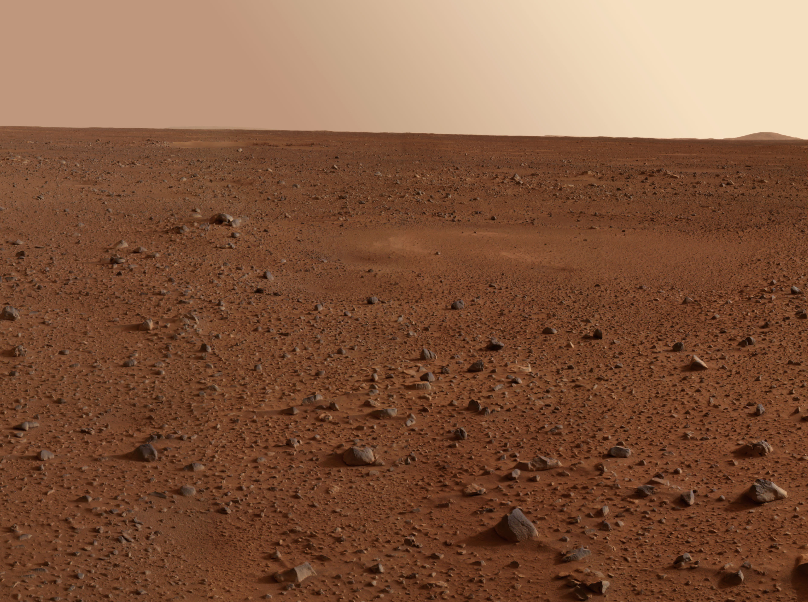

Рух планет Сонячної системи
Візуалізація руху планет
00:00 - Сонячна Система
00:16 - 8 планет обертаються навколо Сонця
00:30 - Всі планети обертаються проти годинникової стрілки
01:01 - Внутрішні планети обертаються швидше, ніж зовнішні
01:45 - Земля є третя планета від Сонця
02:01 - Землі потрібно 365 днів, щоб зробити 1 оберт по орбіті
Порівняння розмірів планет
Порівняльна таблиця
| Планета | Діаметр(км) | Маса(земних мас) | |
|---|---|---|---|
| 1 | Юпітер | 139,822 | 317.8 |
| 2 | Сатурн | 116,460 | 95.2 |
| 3 | Уран | 50,724 | 14.5 |
| 4 | Нептун | 49,244 | 17.1 |
| 5 | Земля | 12,742 | 1.0 |
| 6 | Венера | 12,104 | 0.82 |
| 7 | Марс | 6,779 | 0.11 |
| 8 | Меркурій | 4,880 | 0.06 |
| 9 | Плутон* | 2,377 | 0.002 |
Візуалізація розмірів планет та відстані між ними
00:00 - Сонячна Система
00:42 - Сонце
01:02 - Меркурій
01:25 - Венера
01:49 - Земля та Марс
02:12 - Кам'янисті планети
02:30 - Газові гіганти. Юпітер
03:04 - Сатурн
03:25 - Уран
03:45 - Нептун
04:36 - Висновок
Ландшафт
Меркурій

1. Вся поверхня Меркурія (мозаїка знімків «Мессенджера»)
2. Типовий рельєф планети: лавова рівнина, всіяна кратерами та перетята уступом. Великий кратер ліворуч угорі — Шевченко. Ширина знімка — близько 500 км.
.png)
3. Своєрідна система грабенів у центрі рівнини Спеки. Ширина знімка — близько 270 км.

4. Рівнина спеки.
5. Імпактний басейн із кільцевим хребтом усередині.
Венера
1. Поверхня Венери.
2. Вулкан.
3. Лавові потоки.
4. Вулкан типу farrum на Венері.

5. Модель Венера, якою вона була мільярди років тому.
Земля

1. Поверхня Землі.

2. Гірський ландшафт на Землі.
3. Західносибірська рівнина, Західносибірська низовина — одна з найбільших низовинних акумулятивних рівнин земної кулі.
4. Тихий океан.
5. Материки і океани.
Марс

1. Марс під час пилової бурі 28 жовтня 2005 року. Фотографію зроблено Космічним телескопом ім. Едвіна Хаббла.

2. Устелена скелями поверхня Марса, сфотографована марсоходом Mars Pathfinder.
3. Область кратера Гусєва, сфотографована американським марсоходом Spirit.
4. Дюни на Марсі. Фото марсохода Curiosity.

5. Поверхня Марса. Фото Viking 2, 9 листопада 1977.

6. Долина Марінер на Марсі.
7. Захід Сонця на Марсі 19 травня 2005 року. Світлина марсохода «Спіріт», який знаходився у кратері Гусєва.
Місяць

1. Повний Місяць.
2. Тихо — 85-кілометровий ударний кратер на Місяці, в південній частині видимої сторони. Названий на честь Тихо Браге..

3. Зворотній бік місяця.